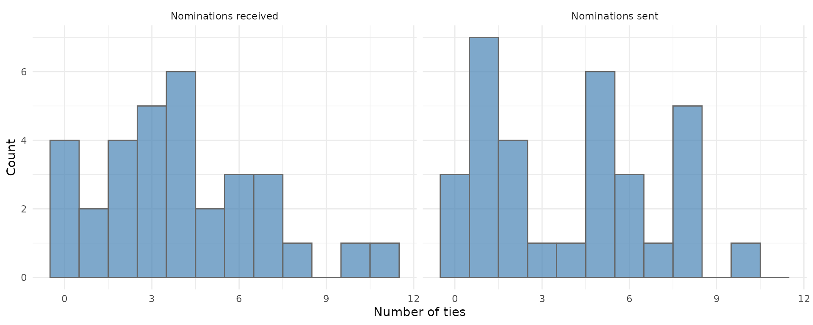
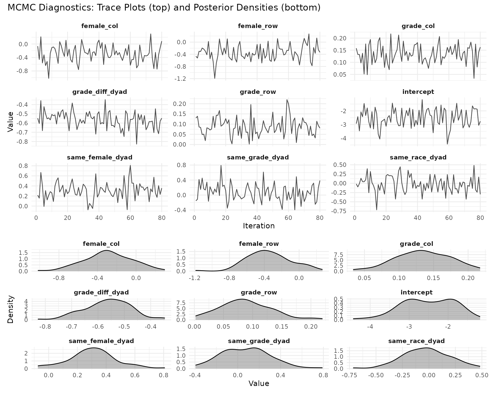
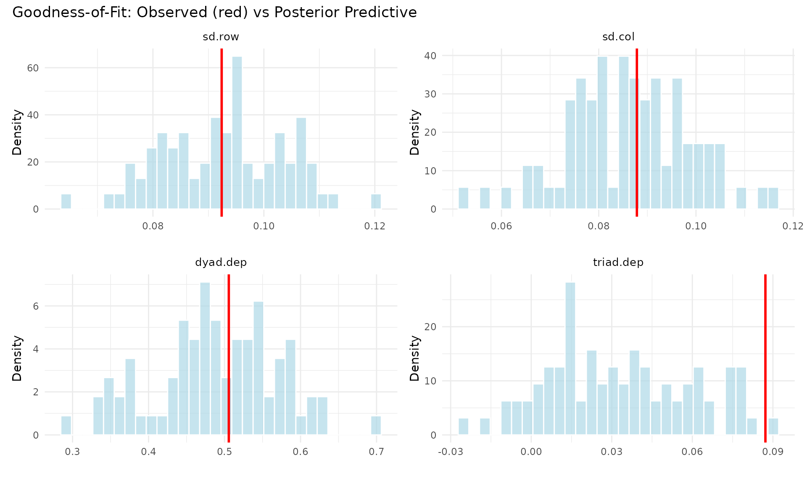
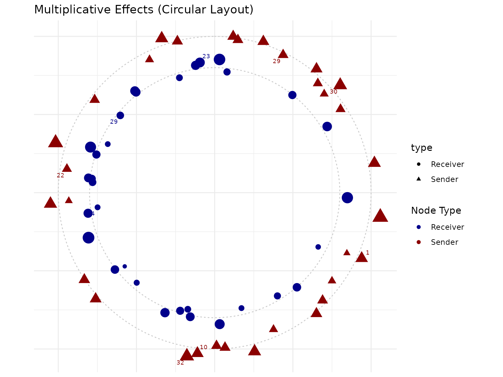
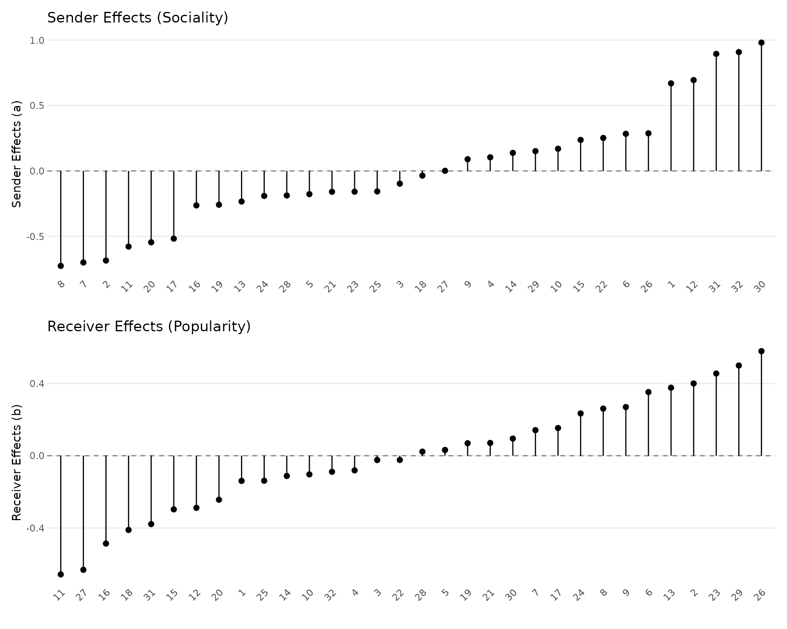
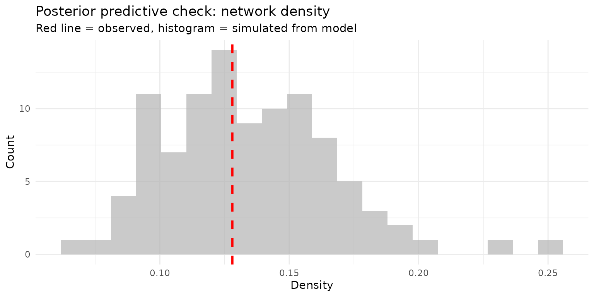

Your First AME Model
Cassy Dorff, Shahryar Minhas, and Tosin Salau
2026-03-16
Source:vignettes/cross_sec_ame.Rmd
cross_sec_ame.RmdWhy Network Models?
Imagine you’re studying friendships in a high school. You have data on who nominated whom as a friend, plus information about each student (gender, race, grade). A natural first instinct is to run a logistic regression: does sharing the same gender predict friendship?
The problem is that friendships aren’t independent observations. Some students are just more social than others (they nominate lots of friends regardless of who). Some students are more popular (they receive lots of nominations). And friendships tend to be reciprocated: if Alice names Bob, Bob is more likely to name Alice. A standard regression ignores all of this, and your standard errors will be wrong.
The Additive and Multiplicative Effects (AME) model handles these dependencies directly. It gives each actor a sender effect (, how social they are), a receiver effect (, how popular they are), and a position in a latent space (, ) that captures who tends to connect with whom beyond what the covariates explain. Think of it as a regression that takes network structure seriously.
The Data
We’ll analyze a friendship network from the Add Health study, a
longitudinal study of adolescents in the United States. The
addhealthc3 dataset in lame contains a
directed friendship nomination network along with student
characteristics.
library(lame)
library(ggplot2)
set.seed(123)
# Load the Add Health friendship network
data(addhealthc3)
# Convert valued network to binary (any nomination = friendship)
Y <- (addhealthc3$Y > 0) * 1
X_nodes <- addhealthc3$X
n <- nrow(Y)
cat("Students:", n, "\n")
#> Students: 32
cat("Friendships:", sum(Y, na.rm = TRUE), "\n")
#> Friendships: 127
cat("Network density:", round(mean(Y, na.rm = TRUE), 3), "\n")
#> Network density: 0.128Before modeling, let’s look at the basic structure. How much do students vary in their number of friends?
out_degree <- rowSums(Y, na.rm = TRUE)
in_degree <- colSums(Y, na.rm = TRUE)
degree_df <- data.frame(
Degree = c(out_degree, in_degree),
Type = rep(c("Nominations sent", "Nominations received"), each = n)
)
ggplot(degree_df, aes(x = Degree)) +
geom_histogram(binwidth = 1, alpha = 0.7, fill = "steelblue", color = "grey40") +
facet_wrap(~Type, ncol = 2) +
labs(x = "Number of ties", y = "Count") +
theme_minimal()
There’s real variation here: some students are much more social than others, and some are much more popular. This is exactly what the sender and receiver random effects will capture.
Building Covariates
The classic question in friendship networks is homophily: do birds of a feather flock together? We’ll test whether students are more likely to be friends with others of the same gender, race, and grade.
# Homophily indicators: 1 if same, 0 if different
same_female <- outer(X_nodes[,"female"], X_nodes[,"female"], "==") * 1
same_race <- outer(X_nodes[,"race"], X_nodes[,"race"], "==") * 1
same_grade <- outer(X_nodes[,"grade"], X_nodes[,"grade"], "==") * 1
grade_diff <- abs(outer(X_nodes[,"grade"], X_nodes[,"grade"], "-"))
# Pack into a 3D array (n x n x p)
Xdyad <- array(NA, dim = c(n, n, 4))
Xdyad[,,1] <- same_female
Xdyad[,,2] <- same_race
Xdyad[,,3] <- same_grade
Xdyad[,,4] <- grade_diff
dimnames(Xdyad)[[3]] <- c('same_female', 'same_race', 'same_grade', 'grade_diff')
for(k in 1:4) diag(Xdyad[,,k]) <- NA
# Nodal covariates (sender and receiver characteristics)
Xrow <- X_nodes[, c("female", "grade")]
Xcol <- X_nodes[, c("female", "grade")]Fitting the Model
Now the fun part. We fit a binary probit AME model with:
- Covariates for homophily effects (do similar students become friends?)
- Sender and receiver random effects (some students are more social/popular)
- Dyadic correlation (reciprocity: friendships tend to be mutual)
- 2-dimensional latent space (residual clustering beyond what covariates explain)
fit <- ame(Y,
Xdyad = Xdyad,
Xrow = Xrow,
Xcol = Xcol,
R = 2, # 2D latent space
family = "binary", # probit model for 0/1 data
rvar = TRUE, # sender random effects
cvar = TRUE, # receiver random effects
dcor = TRUE, # dyadic correlation (reciprocity)
burn = 500, # burn-in (increase for publication)
nscan = 2000, # sampling iterations
odens = 25, # thinning
verbose = TRUE,
gof = TRUE)What Did We Find?
summary(fit)
#>
#> === AME Model Summary ===
#>
#> Call:
#> [1] "Y ~ intercept + dyad(same_female, same_race, same_grade, grade_diff) + row(female, grade) + col(female, grade) + a[i] + b[j] + rho*e[ji] + U[i,1:2] %*% V[j,1:2], family = 'binary'"
#>
#> Regression coefficients:
#> ------------------------
#> Estimate StdError z_value p_value CI_lower CI_upper
#> intercept -2.523 0.677 -3.725 0 -3.851 -1.196 ***
#> female_row -0.347 0.254 -1.362 0.173 -0.845 0.152
#> grade_row 0.088 0.045 1.972 0.049 0.001 0.176 *
#> female_col -0.289 0.248 -1.165 0.244 -0.776 0.197
#> grade_col 0.135 0.039 3.424 0.001 0.058 0.212 ***
#> same_female_dyad 0.305 0.167 1.826 0.068 -0.022 0.633 .
#> same_race_dyad -0.026 0.222 -0.115 0.908 -0.461 0.41
#> same_grade_dyad 0.074 0.231 0.322 0.747 -0.378 0.527
#> grade_diff_dyad -0.563 0.089 -6.313 0 -0.738 -0.388 ***
#> ---
#> Signif. codes: 0 '***' 0.001 '**' 0.01 '*' 0.05 '.' 0.1 ' ' 1
#>
#> Variance components:
#> -------------------
#> Estimate StdError
#> va 0.323 0.106
#> cab 0.012 0.070
#> vb 0.206 0.076
#> rho 0.877 0.065
#> ve 1.000 0.000
#> (va = sender, cab = sender-receiver covariance, vb = receiver,
#> rho = dyadic correlation, ve = residual variance)Let’s unpack the key results:
Homophily effects. Look at the regression coefficients. Positive values mean the covariate increases the probability of a tie. Same-race and same-grade effects tell us whether students preferentially befriend others like themselves. The grade difference effect tells us whether friendships cross grade boundaries.
Variance components. The sender variance
(va) and receiver variance (vb) quantify how
much students differ in their sociality and popularity. Larger values
mean more heterogeneity. The dyadic correlation (rho)
captures reciprocity: positive values mean if A nominates B, B is more
likely to nominate A back.
For binary networks with a probit link, a rough rule of thumb is that a coefficient of changes the probability of a tie by about at the mean.
Did the Sampler Converge?
Since lame uses MCMC (Markov chain Monte Carlo), we need
to verify that the sampler explored the posterior distribution
thoroughly. The trace_plot function is the first tool to
reach for.
trace_plot(fit, params = "beta", ncol = 3)
What to look for: The trace plots (left) should look like “fuzzy caterpillars” bouncing around a stable mean. If you see long trends, the chain hasn’t converged. The density plots (right) should be smooth and unimodal. With 80 post-burn-in samples, convergence should be reasonable, but for a publication you’d want longer chains.
Does the Model Fit the Data?
Goodness-of-fit (GOF) checks whether the model can reproduce key structural features of the observed network. This goes beyond dyad-level prediction: it tests whether the model captures emergent properties like degree heterogeneity, reciprocity patterns, and clustering.
gof_plot(fit)
Each panel shows a different network statistic. The histogram is the distribution from simulated networks drawn from the fitted model; the vertical line is the observed value. When the observed value falls well within the simulated distribution, the model is capturing that aspect of the data. When it falls in the tails, the model is missing something.
You can also compute GOF after the fact using the gof()
function, which is useful if you want to test custom statistics:
# Define a custom statistic: degree correlation
custom_stats <- function(Y) {
out_deg <- rowSums(Y, na.rm = TRUE)
in_deg <- colSums(Y, na.rm = TRUE)
c(deg_cor = cor(out_deg, in_deg))
}
gof_custom <- gof(fit, custom_gof = custom_stats, nsim = 50, verbose = FALSE)
cat("Observed degree correlation:", round(gof_custom[1, "deg_cor"], 3), "\n")
#> Observed degree correlation: 0.47
cat("Model expected:", round(mean(gof_custom[-1, "deg_cor"]), 3), "\n")
#> Model expected: 0.264Visualizing the Latent Space
The multiplicative effects () place each student in a 2D latent space. Students near each other in sender space (triangles) tend to nominate similar friends; students near each other in receiver space (circles) tend to be nominated by similar students. This captures clustering that the covariates alone can’t explain.
uv_plot(fit, layout = "circle", show.edges = FALSE,
label.nodes = TRUE, label.size = 2.5) +
theme_minimal() +
theme(axis.text = element_blank(), axis.title = element_blank())
Students on opposite sides of the plot have dissimilar friendship patterns. Clusters of students placed near each other likely share some unobserved characteristic (same social group, same extracurricular activities) that drives their friendship choices beyond gender, race, and grade.
Who Are the Most Social / Popular Students?
The additive effects decompose individual heterogeneity into sender effects (sociality) and receiver effects (popularity):
p1 <- ab_plot(fit, effect = "sender", sorted = TRUE,
title = "Sender Effects (Sociality)")
p2 <- ab_plot(fit, effect = "receiver", sorted = TRUE,
title = "Receiver Effects (Popularity)")
library(patchwork)
p1 / p2
Students with large positive sender effects nominate more friends than expected given their covariates; those with large positive receiver effects receive more nominations.
Making Predictions
The model gives you predicted probabilities for every possible tie, including unobserved ones. This is useful for link prediction (who is likely to become friends?) and for understanding the model’s fit at the dyad level.
pred_resp <- predict(fit, type = "response")
# How well does the model classify?
Y_vec <- as.vector(Y)
pred_vec <- as.vector(pred_resp)
keep <- !is.na(Y_vec)
# Simple classification at threshold 0.5
pred_binary <- (pred_vec[keep] > 0.5) * 1
confusion <- table(Actual = Y_vec[keep], Predicted = pred_binary)
knitr::kable(confusion, caption = "Confusion Matrix (threshold = 0.5)")| 0 | 1 | |
|---|---|---|
| 0 | 852 | 13 |
| 1 | 88 | 39 |
Simulating from the Model
You can generate new networks from the fitted posterior. This is useful for posterior predictive checks and for understanding what kinds of networks the model implies.
sims <- simulate(fit, nsim = 100)
# Compare simulated vs observed density
sim_densities <- sapply(sims$Y, function(y) mean(y, na.rm = TRUE))
obs_density <- mean(Y, na.rm = TRUE)
ggplot(data.frame(density = sim_densities), aes(x = density)) +
geom_histogram(bins = 20, fill = "grey70", alpha = 0.7) +
geom_vline(xintercept = obs_density, color = "red", linewidth = 1, linetype = 2) +
labs(title = "Posterior predictive check: network density",
subtitle = "Red line = observed, histogram = simulated from model",
x = "Density", y = "Count") +
theme_minimal()
Practical Tips
Choosing R (latent dimensions). Start with R = 0 (no latent space), then try R = 1 and R = 2. Compare GOF statistics. If adding dimensions doesn’t improve the GOF, the covariates and additive effects are sufficient.
MCMC settings. For exploratory work,
burn = 500, nscan = 2000, odens = 25 is fine. For
publication, use at least
burn = 2000, nscan = 10000, odens = 25 and check
convergence with trace_plot().
Variance components. Include
rvar = TRUE and cvar = TRUE unless you have a
specific reason not to. Include dcor = TRUE for directed
networks where reciprocity is plausible.
Interpreting coefficients. For binary networks, the coefficients are on the probit scale. Multiply by ~0.4 for an approximate probability change at the mean.
What’s Next?
- Multiple time periods? See the lame overview for longitudinal models
- Two types of nodes? See the bipartite vignette
- Evolving network structure? See the dynamic effects vignette
-
Other data types? The
familyargument supports normal, binary, ordinal, poisson, tobit, and more